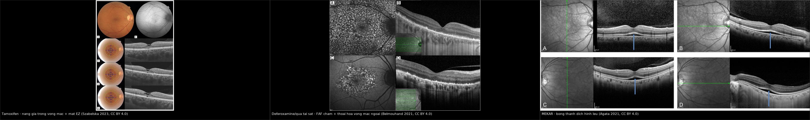
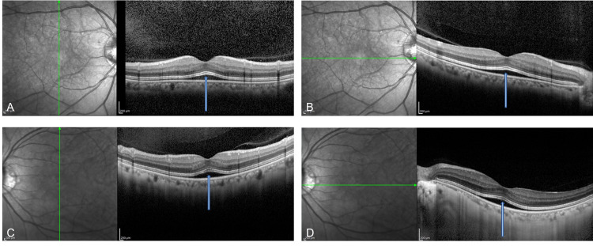
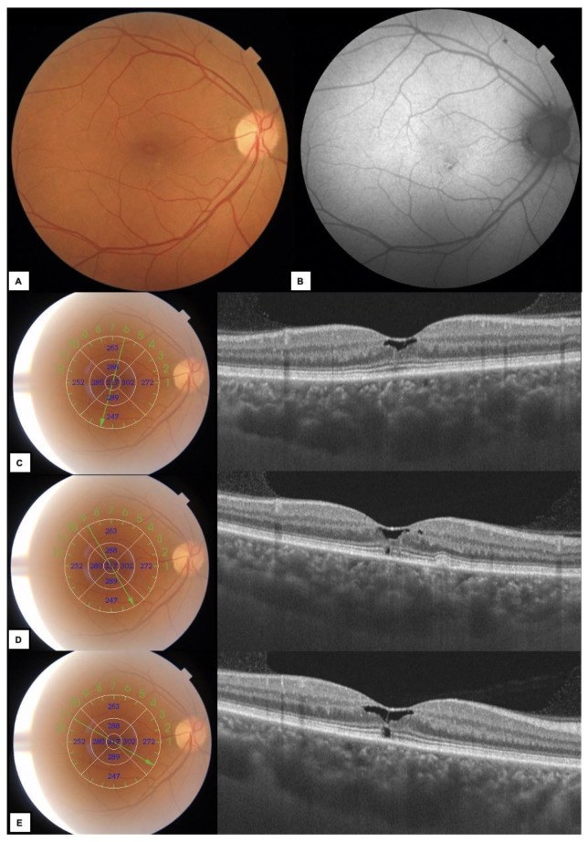
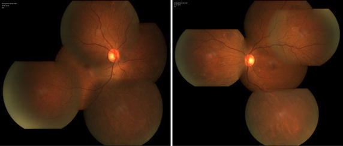
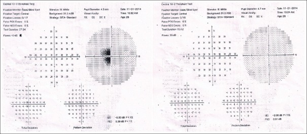

487 — Nhiễm độc võng mạc do thuốc KHÁC ngoài HCQ: tamoxifen, clofazimine, deferoxamine, ức chế MEK / Non-HCQ drug retinopathy
Tags: pattern:ton-thuong-vong-mac-ngoai-do-thuoc vung:hoang-diem score:AAO-nguy-co protocol:SD-OCT-FAF
Mức chắc chắn (certainty): tổng hợp y văn (literature synthesis) — tự biên từ các bài mở CC BY 4.0/CC BY-NC-SA (loạt ca + review Diagnostics, SpringerPlus, BMC Ophthalmology, Cureus, J Pharmacol Pharmacother, Int J Mol Sci); số liệu lấy nguyên từ bài gốc, tên tác giả đối chiếu PMCID.
Bài này trả lời "khi nào độc tính võng mạc KHÔNG do hydroxychloroquine" — bốn nhóm thuốc hay bị gộp nhầm vào HCQ nhưng có dấu hiệu OCT riêng và xử trí khác hẳn. 484 – Nhiễm độc võng mạc do hydroxychloroquine là bài nền (mất EZ cạnh hoàng điểm, FAF "mắt bò", thị trường 10-2, ngưỡng liều 5 mg/kg). Bài này không lặp lại HCQ mà tập trung vào 4 gamut còn thiếu: tamoxifen (nang giả + mất EZ), clofazimine (tinh thể + mắt bò), deferoxamine/quá tải sắt (teo võng mạc ngoài + FAF đốm), ức chế MEK (bong thanh dịch hai bên). Điểm chết người: ngừng nhầm thuốc ung thư khi độc tính thực sự lành tính, tự khỏi (MEKAR), hoặc bỏ sót thuốc thứ hai (tamoxifen dùng chung với HCQ).
1. Tổng quan bệnh học – cơ chế hình ảnh
1.1 Vì sao bốn nhóm thuốc này "ăn" vào võng mạc theo bốn kiểu khác nhau
- Tamoxifen — thuốc ưa mỡ, tích điện dương, tích tụ lysosome: giống HCQ, tamoxifen bị "giam" trong lysosome của tế bào biểu mô sắc tố (RPE) và tế bào Müller, làm rối loạn chức năng lysosome và phá vỡ hàng rào máu–võng mạc ngoài. Hệ quả hình ảnh có hai tầng:
- Tầng "tinh thể" (crystal retinopathy): phức hợp tamoxifen–melanin lắng thành tinh thể trắng phản chiếu (refractile/white deposits) ở lớp sợi thần kinh và lớp tế bào hạch ngoại vi — điển hình ở liều cao.
- Tầng "nang giả" (pseudocystic cavitation): rối loạn tế bào Müller → khoang giảm hồi âm nhỏ trong lớp võng mạc trong ở hố trung tâm, kèm mất/gián đoạn ellipsoid zone (EZ) — điển hình ở liều chuẩn 20 mg/ngày nhưng dùng lâu. Vì sao gọi "nang giả": không có rò mạch/không phải phù nề dịch thật như trong phù hoàng điểm, mà là thoái hóa – tách lớp nội bào.
- Clofazimine — thuốc nhuộm phenazine ưa mỡ: kết tinh trong mọi mô giàu lipid (giác mạc, kết mạc, mống mắt, củng mạc, RPE). Cơ chế: lắng tinh thể trong RPE + độc tính quang (phototoxic) làm giảm tế bào cảm quang → hình "mắt bò" (bull's-eye) muộn, nhưng ám điểm trung tâm có thể xuất hiện TRƯỚC khi đáy mắt đổi màu (tổn thương khởi đầu ở đoạn ngoài tế bào cảm quang).
- Deferoxamine (và quá tải sắt) — hai cơ chế tranh luận: quan điểm kinh điển: deferoxamine liều cao, ferritin thấp gây suy bơm RPE → phù hoàng điểm, lắng dạng lưới/vitelliform, thoái hóa võng mạc ngoài dạng loạn dưỡng hoa văn (pattern dystrophy-like). Quan điểm mới (có bằng chứng tốt hơn): chính quá tải sắt (ferritin cao kéo dài) gây siderosis võng mạc qua stress oxy hóa/ferroptosis — deferoxamine chỉ kéo dài sống để sắt kịp gây hại; vì vậy tên "deferoxamine retinopathy" có thể đặt sai (xem phản biện ở mục 5).
- Ức chế MEK (trametinib, cobimetinib, binimetinib, selumetinib) — độc tính "rò dịch" (MEKAR): ức chế MEK → ERK ở RPE làm mất chức năng bơm dịch → bong thanh dịch dưới võng mạc (subretinal fluid). Không phải viêm, không phải tân mạch: hồi phục khi tái hoạt ERK, nên tự khỏi dù tiếp tục thuốc.
1.2 Ngưỡng định lượng nằm lòng (bắt buộc nhớ)
- Tamoxifen: liều chuẩn 20 mg/ngày × 3–5 năm; liều cao 30–40 mg, và 200 mg/ngày (u thần kinh đệm ác tính). Tỷ lệ độc tính mắt 0,9–12,0% và tăng theo liều. Ca gốc: 20 mg/ngày trong 5 năm, tổng liều tích lũy 36,5 g → mất EZ/IZ hai bên, độ dày hoàng điểm 119 µm (mắt phải) và 156 µm (mắt trái) (bình thường ~250–300 µm), Arden ratio 1,658 và 1,638 (bình thường > 1,8), và vẫn tiến triển 8 năm SAU khi ngừng thuốc → không hồi phục.
- Clofazimine: an toàn khi ≤ 100 mg/ngày; độc võng mạc đã báo cáo ở 200 mg/ngày (bệnh nhân AIDS). Có ca liều thấp 100 mg/tuần vẫn có ám điểm trung tâm một bên (Naranjo 3 = "có thể", xem phản biện). Ngừng thuốc sớm → cải thiện trong 3 tháng; hình "mắt bò" đã hình thành không thoái triển.
- Deferoxamine/quá tải sắt: ngưỡng an toàn kinh điển cho tim là ferritin < 1.000 ng/mL; chưa có ngưỡng an toàn cho võng mạc. Ca gốc: ferritin dao động 2.000–7.230 ng/mL (một ca đỉnh 10.030 ng/mL) trước khi mất thị lực; mật độ tế bào nón ~50% bình thường ở vùng tổn thương.
- Ức chế MEK: MEKAR gặp ở > 90% người dùng ức chế MEK, đặc biệt liệu pháp phối hợp BRAF + MEK (nghiên cứu pha III: 40,6% bệnh nhân có bong thanh dịch); khởi phát trung vị ngày 38; tự cải thiện sau 3–6 tháng dù tiếp tục thuốc; ca gốc: bong thanh dịch tự tan trong 1–2 giờ, độ dày hắc mạc bình thường (152/129 µm), không có điểm rò trên FA.
2. Mẫu hình + chẩn đoán phân biệt theo vị trí (gamut)
Câu hỏi lọc: "Bất thường nằm ở TẦNG NÀO của võng mạc (trong / ngoài / dưới võng mạc), có ĐỐI XỨNG hai bên không, và đang dùng những thuốc gì?" — tầng tổn thương + tính đối xứng + toàn bộ đơn thuốc quyết định chẩn đoán.
- Dịch dưới võng mạc hai bên, đối xứng, dạng "lều/caterpillar", không rò mạch: MEKAR (ức chế MEK, ± ức chế FGFR như erdafitinib). Cạm bẫy: gần giống CSCR, nhưng MEKAR không có nâng RPE, hắc mạc không dày, FA không rò và thay đổi trong vài giờ.
- Khoang giảm hồi âm nhỏ trong võng mạc trong ở hố trung tâm + mất EZ: tamoxifen (liều chuẩn, dùng lâu) — phân biệt MacTel type 2 (OCTA bất thường: giãn mao mạch, mất mạch) và phù hoàng điểm (có rò mạch).
- Tinh thể trắng phản chiếu ở võng mạc ngoại vi (± nang hoàng điểm): tamoxifen liều cao; cũng gặp canthaxanthin, methoxyflurane — hỏi kỹ tiền sử.
- Hình "mắt bò" (vòng teo quanh hố trung tâm): HCQ/chloroquine (bài 484), clofazimine, thioridazine (liều > 800 mg/ngày) — phân biệt bằng bối cảnh thuốc, không bằng hình dạng.
- Teo võng mạc ngoài + FAF "đốm rải rác" (dotted) hai bên: deferoxamine/quá tải sắt (dạng loạn dưỡng hoa văn); phân biệt loạn dưỡng hoa văn di truyền (không có bối cảnh truyền máu/sắt).
- Xuất tiết bông + xuất huyết + thiếu tưới máu: bệnh võng mạc nền (lupus/ĐTĐ/tăng huyết áp) — không phải độc tính thuốc, không ngừng thuốc.
Mnemonic theo hình ảnh: MEK làm DỊCH · tamoxifen làm NANG GIẢ · clofazimine làm TINH THỂ + mắt bò · sắt/deferoxamine làm TEO + FAF đốm.
3. Bảng so sánh phân biệt (ma trận đối chiếu)
| Thực thể (entity) | Hình ảnh điển hình (OCT/FAF/FA) | Chốt vào (rule-in) | Chốt loại (rule-out) | Xử trí / theo dõi |
|---|---|---|---|---|
| Tamoxifen — nang giả + mất EZ | Khoang giảm hồi âm nhỏ trong võng mạc trong ở hố trung tâm, mất/gián đoạn EZ–IZ, hoàng điểm mỏng (119–156 µm); FAF lốm đốm | Đang/đã dùng tamoxifen + nang giả hoàng điểm đối xứng + OCTA bình thường | OCTA có giãn mao mạch/mất mạch = MacTel type 2; có rò mạch = phù hoàng điểm | Ngừng tamoxifen (phối hợp ung thư, chuyển sang ức chế aromatase); theo dõi vì có thể tiến triển sau ngừng |
| Clofazimine — mắt bò / tiền hoàng điểm | Ám điểm trung tâm trước, đáy mắt còn bình thường; muộn → mắt bò, tinh thể giác mạc/kết mạc, nước mắt–kết mạc nâu | Tiền sử clofazimine (lepra/Mycobacterium) + ám điểm trung tâm một–hai bên | Đáy mắt bình thường KHÔNG loại trừ — phải làm thị trường 10-2 + OCT | Ngừng thuốc sớm (cải thiện ~3 tháng); mắt bò đã hình thành không hồi phục; giữ ≤ 100 mg/ngày |
| Deferoxamine / quá tải sắt | Teo võng mạc ngoài + FAF đốm (dotted), dạng loạn dưỡng hoa văn, phù hoàng điểm do suy bơm RPE; ERG giảm | Truyền máu nhiều lần + ferritin > 1.000 ng/mL kéo dài, ± deferoxamine liều cao | Ferritin bình thường và không truyền máu → nghĩ loạn dưỡng hoa văn di truyền | Đối chiếu ferritin trước–trong–sau mất thị lực (không mặc định do thuốc); tối ưu hóa chelat sắt; ngừng deferoxamine nếu nghi ngờ |
| Ức chế MEK (MEKAR) | Bong thanh dịch hai bên đối xứng, dạng lều, IZ dày lên, không nâng RPE, hắc mạc bình thường, FA không rò; biến đổi trong vài giờ | Đang dùng ức chế MEK ± BRAF + bong thanh dịch đối xứng | Nâng RPE/rò điểm trên FA/hắc mạc dày = CSCR; một bên + viêm = VKH/khác | KHÔNG ngừng thuốc ung thư: theo dõi, tự khỏi 3–6 tháng; chỉ tạm ngừng khi dịch dai dẳng gây triệu chứng |
| HCQ/chloroquine (đối chiếu, bài 484) | Mất EZ cạnh hoàng điểm đối xứng, hố trung tâm bảo tồn ("flying saucer"), FAF "mắt bò", thị trường 10-2 có cung ám điểm | Dùng HCQ > 5 năm hoặc liều > 5 mg/kg | Có xuất huyết/rò mạch/dịch → nghĩ bệnh khác | Ngừng HCQ khi chắc chắn; chụp lại 6–12 tháng |

Trái: tamoxifen — khoang giảm hồi âm nhỏ ở hố trung tâm + mất ellipsoid zone, kèm ảnh đáy mắt/FAF (Szabelska P et al., Diagnostics 2023, PMC10093114, CC BY 4.0). Giữa: deferoxamine/quá tải sắt — FAF đốm rải rác + thoái hóa võng mạc ngoài trên OCT (Belmouhand M et al., BMC Ophthalmol 2021, PMC8278719, CC BY 4.0). Phải: MEKAR — bong thanh dịch hình lều hai bên, IZ dày lên, không nâng RPE (Agata C et al., Cureus 2021, PMC8761530, CC BY 4.0). Ảnh ghép letterbox, giữ nguyên tỷ lệ, không crop/kéo giãn.4. Protocol chụp + hệ phân độ / ngưỡng hành động
4.1 Bộ ảnh tối thiểu theo từng thuốc
- Tamoxifen: SD-OCT macula (đọc từng B-scan qua hố trung tâm, không chỉ bản đồ dày) + OCTA (chốt phân biệt với MacTel type 2) + EOG/ERG khi nghi ngờ; khám mắt nền tảng trước điều trị vì retinopathy không hồi phục.
- Clofazimine: soi đèn khe tìm tinh thể giác mạc/kết mạc (dấu hiệu tích lũy) + thị trường 10-2 + SD-OCT khi có triệu chứng; giữ liều ≤ 100 mg/ngày.
- Deferoxamine: đối chiếu ferritin (mốc < 1.000 ng/mL) + OCT + FAF + ERG; khám mắt trước và định kỳ trong khi truyền máu.
- Ức chế MEK: OCT macula nền tảng, rồi 1 tháng sau khi bắt đầu và mỗi 3 tháng; chụp lại ngay khi có mờ nhìn (vì dịch thay đổi trong vài giờ).
4.2 Sơ đồ quyết định
flowchart TD
A[Benh nhan dang dung thuoc co nguy co + mo nhin] --> B[SD-OCT macula + FAF]
B --> C{Tang ton thuong nao?}
C -->|Dich duoi vong mac doi xung| D{Co nang RPE / ro mach / hac mac day?}
D -->|Khong| E[MEKAR - tiep tuc thuoc ung thu, theo doi 3-6 thang]
D -->|Co| F[CSCR hoac VKH - khong phai MEKAR]
C -->|Nang gia trong vong mac + mat EZ| G[Tamoxifen - ngung thuoc, phoi hop ung thu]
C -->|Tinh the + mat bo| H{Thuoc nao?}
H -->|Clofazimine| I[Ngung clofazimine, thi truong 10-2]
H -->|HCQ hoac thioridazine| J[Xem bai 484 - ngung HCQ]
C -->|Teo vong mac ngoai + FAF dom| K[Doi chieu ferritin - qua tai sat hay deferoxamine]
E --> L{Mo nhin tang / dich dai dang?}
L -->|Co| M[Tam ngung MEK, hoi chan ung thu]
L -->|Khong| N[Tiep tuc, chup lai 3 thang]
4.3 Nguyên tắc "ngừng hay không ngừng thuốc"
- MEKAR: không ngừng thuốc ung thư vì lợi ích sống còn; chỉ tạm ngừng/giảm liều khi dịch dai dẳng, gây triệu chứng hoặc giảm thị lực.
- Tamoxifen, clofazimine: ngừng (phối hợp bác sĩ điều trị) — vì tổn thương có thể không hồi phục.
- Deferoxamine: quyết định sau khi đối chiếu ferritin; nếu quá tải sắt chưa kiểm soát, không chỉ đổi thuốc mà phải tối ưu chelat.
5. Biến thể bình thường và cạm bẫy
- Bỏ sót thuốc thứ hai: bệnh nhân ung thư vú có thể dùng đồng thời tamoxifen và HCQ (bệnh tự miễn) — độc tính cộng gộp; luôn rà toàn bộ đơn thuốc, không chỉ thuốc "đang nghi".
- MEKAR bị ngừng thuốc oan: bong thanh dịch hai bên, đối xứng, tự khỏi là biểu hiện dược lý, không phải tiến triển u — ngừng thuốc ung thư vì MEKAR là sai lầm điều trị nghiêm trọng.
- Nhầm MEKAR với CSCR: CSCR có nâng RPE, hắc mạc dày, điểm rò trên FA; MEKAR không có các dấu hiệu này và dao động trong vài giờ.
- Phản biện (fidelity + critique) — "deferoxamine retinopathy" có thể là tên sai: bài gốc chỉ ra mất thị lực xuất hiện trên nền ferritin tăng dần vượt 1.000 ng/mL nhiều năm, không tương quan thời điểm với thuốc chelat, và thử nghiệm động vật cho thấy chính sắt gây thoái hóa võng mạc → quá tải sắt có thể mới là nguyên nhân thật. Vì vậy không được quy kết vội cho thuốc khi chưa đọc diễn biến ferritin.
- Phản biện — ca clofazimine không điển hình: ca gốc là liều thấp (100 mg/tuần), một bên, bệnh nhân không suy giảm miễn dịch, kèm methoxsalen (thuốc cảm quang) — Naranjo chỉ 3 ("có thể"), tức không chắc clofazimine một mình gây bệnh; bài gốc nêu giả thuyết tương tác cảm quang. Đây là ví dụ không được biến một ca "có thể" thành quy luật.
- Đáy mắt bình thường không loại trừ: clofazimine gây ám điểm trước khi đáy mắt đổi màu; tamoxifen giai đoạn sớm chỉ thấy trên OCT.
- Thị lực bình thường không loại trừ: ca MEKAR có thị lực 20/16 hai mắt mà vẫn có bong thanh dịch hai bên.
6. Tự lượng giá — Blind Quiz
Ca 1 — Nữ 50 tuổi, melanoma di căn, đang dùng encorafenib + binimetinib 4 tháng, đột ngột mờ nhìn hai mắt. Thị lực 20/16 hai mắt. OCT dưới đây.

- Hỏi: (1) Dịch nằm ở tầng nào? (2) Ba dấu hiệu nào loại trừ CSCR? (3) Có nên ngừng thuốc ung thư?
Bấm để hiện đáp án (findings + chẩn đoán)
- Findings: (A–D) bong thanh dịch nông hình lều, đối xứng hai mắt, ở hố trung tâm trên cả mặt cắt đứng và ngang; interdigitation zone (IZ) phía trên dày lên; không nâng RPE.
- Chẩn đoán: MEKAR (bong võng mạc thanh dịch do ức chế MEK) — cơ chế RPE mất bơm dịch do ức chế MEK→ERK, không phải viêm/tân mạch.
- Loại trừ CSCR: không nâng RPE · hắc mạc không dày (152/129 µm) · FA không có điểm rò; thêm nữa dịch tự tan trong 1–2 giờ — dao động nhanh là đặc trưng MEKAR.
- Xử trí: tiếp tục encorafenib + binimetinib, theo dõi OCT; MEKAR thường tự cải thiện sau 3–6 tháng dù tiếp tục thuốc. Chỉ tạm ngừng khi dịch dai dẳng/giảm thị lực.
- Nguồn ảnh: Agata C et al., Cureus 2021 (PMC8761530), CC BY 4.0 — Fig. 1.
Ca 2 — Nữ 57 tuổi, ung thư vú, tamoxifen 20 mg/ngày đã 7 năm, mờ nhìn mắt phải 2 tháng. OCT đa phương thức + đáy mắt dưới đây.

- Hỏi: (1) Khoang trong võng mạc là nang thật hay giả? (2) Chẩn đoán phân biệt chính trên OCTA là gì? (3) Ngừng thuốc có hồi phục hoàn toàn?
Bấm để hiện đáp án
- Findings: (A) đáy mắt có thay đổi RPE kín đáo; (B) FAF lốm đốm giảm/tăng huỳnh quang; (C–E) các khoang giảm hồi âm không đều ở hố trung tâm + gián đoạn lớp tế bào cảm quang, độ dày hoàng điểm trung tâm bình thường; bờ RPE gồ nhẹ.
- "Nang giả": khoang do rối loạn tế bào Müller/tách lớp nội bào, không phải dịch do rò mạch — nên không gọi là phù hoàng điểm và không điều trị bằng anti-VEGF.
- DDx chính: MacTel type 2 — phân biệt bằng OCTA (MacTel: giãn mao mạch, mất mạch, "right-angle venule"; tamoxifen: OCTA bình thường, như ca gốc).
- Tiên lượng: không hồi phục hoàn toàn — retinopathy tamoxifen có thể tiến triển tiếp sau khi ngừng; ca gốc khác (20 mg × 5 năm, tổng liều 36,5 g) còn tiến triển 8 năm sau khi ngừng. Xử trí: ngừng tamoxifen, phối hợp ung thư (chuyển letrozole), theo dõi định kỳ.
- Nguồn ảnh: Szabelska P et al., Diagnostics 2023 (PMC10093114), CC BY 4.0 — Fig. 1. Đáy mắt tinh thể ngoại vi: Wang L et al., SpringerPlus 2015 (PMC4573752), CC BY 4.0 — Fig. 1.

Ca 3 — Nam 26 tuổi, bạch biến, dùng clofazimine 100 mg/tuần + methoxsalen 10 mg/ngày 1 năm, mờ nhìn + ám điểm trung tâm mắt trái 8 tháng. Đáy mắt và FA bình thường. Thị trường dưới đây.

- Hỏi: (1) Vì sao đáy mắt bình thường mà bệnh nhân vẫn mất thị lực? (2) Nghĩ đến cơ chế nào? (3) Cần bao nhiêu bằng chứng để kết luận "do clofazimine"?
Bấm để hiện đáp án
- Findings: thị trường 10-2 ám điểm trung tâm mắt trái (MD −6,80 dB) trong khi đáy mắt và FFA bình thường; sau ngừng thuốc 3 tháng, ám điểm thu nhỏ – nhẹ đi (MD −2,05 dB) và thị lực cải thiện 5 dòng.
- Cơ chế: tổn thương khởi đầu ở đoạn ngoài tế bào cảm quang (trước khi RPE mất) → triệu chứng đi trước hình ảnh; clofazimine lắng tinh thể trong RPE + độc tính quang (methoxsalen làm tăng nhạy cảm ánh sáng).
- Mức bằng chứng: Naranjo 3 = "có thể" — không đủ để khẳng định clofazimine đơn thuần gây bệnh; bài gốc nêu tương tác cảm quang và ca này không điển hình (liều thấp, một bên, miễn dịch bình thường). Kết luận an toàn: "tiền hoàng điểm do thuốc, nghi ngờ" + ngừng các thuốc nghi ngờ và theo dõi.
- Bài học: với độc tính mắt do thuốc, thị trường 10-2 + OCT phát hiện trước đáy mắt; không chờ đáy mắt đổi màu.
- Nguồn ảnh: Kasturi N, Srinivasan R, J Pharmacol Pharmacother 2016 (PMC5020777), CC BY-NC-SA 4.0 — Fig. 2–3.
Bài liên quan chéo
- 484 – Nhiễm độc võng mạc do hydroxychloroquine
- 441 – OCT hoàng điểm
- 470 – CSCR do corticosteroid: mất thị lực không đau
- 455 – Behçet & lupus tại mắt
- 453 – Bệnh võng mạc tăng huyết áp & thiếu máu
- 434 – Teo thị thần kinh thị do độc & LHON
- 448 – U hắc mạc (melanoma) vs nevus vs di căn
- 400 – Tổng quan Mắt & thị giác
Ảnh
images/487_tamoxifen-nang-gia_OCT_PMC10093114.jpg— Szabelska P et al., Diagnostics 2023 (PMC10093114), CC BY 4.0.images/487_tamoxifen-tinh-the_Fundus_PMC4573752.jpg— Wang L et al., SpringerPlus 2015 (PMC4573752), CC BY 4.0.images/487_deferoxamine-ngoai-vong-mac_OCT-FAF_PMC8278719.jpg— Belmouhand M et al., BMC Ophthalmol 2021 (PMC8278719), CC BY 4.0.images/487_MEKAR-bong-thanh-dich_OCT_PMC8761530.jpg— Agata C et al., Cureus 2021 (PMC8761530), CC BY 4.0.images/487_clofazimine-scotoma_VF_PMC5020777.jpg— Kasturi N, Srinivasan R, J Pharmacol Pharmacother 2016 (PMC5020777), CC BY-NC-SA 4.0.images/composite_487_ba-kieu-ton-thuong-OCT.jpg— ảnh ghép từ ba bài CC BY 4.0 trên (letterbox, không crop/kéo giãn).- Nguồn + giấy phép từng ảnh:
images/CREDITS.md.
Không dùng để chẩn đoán độc lập khi chưa có người hướng dẫn.